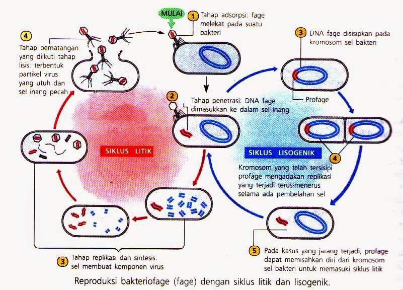

Mengenal Virus & Peranannya dalam Kehidupan
Media pembelajaran interaktif Kurikulum Merdeka. Pelajari struktur virus, siklus replikasi, peranan positif & negatif, serta kuis 20 soal bergambar.
Capaian Pembelajaran (CP)
Pada akhir fase E, peserta didik mampu mengidentifikasi struktur virus, menganalisis proses reproduksi (litik & lisogenik), mengevaluasi peranan virus, serta merumuskan upaya pencegahan.
Sejarah Penemuan Virus
Kata "Virus" berasal dari bahasa Latin yang berarti racun. Penemuan virus diawali dari penelitian penyakit mozaik tembakau:
Adolf Mayer (Jerman)
Penyakit mozaik tembakau menular melalui ekstrak getah daun.
Dmitri Ivanovsky (Rusia)
Menyaring getah tembakau dengan saringan bakteri, agen tetap lolos.
Martinus Beijerinck (Belanda)
Agen infeksi hanya bereplikasi dalam sel hidup (Contagium vivum fluidum).
Wendell Stanley (AS)
Berhasil mengkristalkan Tobacco Mosaic Virus (TMV).
Sifat-Sifat Khusus Virus
- Aseluler: Tidak memiliki dinding sel, membran sel, sitoplasma, mau pun organel sel.
- Ukuran Ultra-Mikroskopis: Berukuran 20 nm – 300 nm (hanya terlihat Mikroskop Elektron).
- Parasit Obligat Intraseluler: Hanya aktif jika berada di dalam sel inang hidup.
- Satu Jenis Asam Nukleat: Hanya mengandung DNA atau RNA saja.
Eksplorasi Anatomi Virus Interaktif
Ketuk angka pada diagram virus di bawah ini untuk mempelajari organel dan fungsinya!
Ketuk angka pada gambar
Kapsid (Kepala Virus)
Kapsid adalah selubung protein yang tersusun dari unit-unit kecil kapsomer untuk melindungi materi genetik.
Poin Kunci Kurikulum Merdeka:
Bentuk kapsid bervariasi: polihedral, heliks, atau kompleks.
Replikasi Virus: Litik vs Lisogenik
Pelajari tahapan reproduksi Bakteriofag melalui diagram skematik Kurikulum Merdeka dan simulasi stepper di bawah ini!
Diagram Reproduksi Bakteriofage (Siklus Litik & Lisogenik)

Siklus Litik (Area Merah - Kiri)
4 Tahap Utama: (1) Adsorpsi → (2) Penetrasi → (3) Replikasi & Sintesis → (4) Pematangan & Lisis (Sel inang pecah).
Siklus Lisogenik (Area Biru - Kanan)
5 Tahap Utama: (1) Adsorpsi → (2) Penetrasi → (3) Sisipan Profage → (4) Pembelahan Sel → (5) Induksi ke Litik.
Fage melekat pada suatu bakteri.
Video Pembelajaran Biologi
Pilih video pembelajaran yang ingin ditonton:
SARS-CoV-2 (COVID-19)
Menyerang sistem pernapasan manusia. Ditularkan melalui droplet udara.
HIV (AIDS)
Menyerang sel imunitas Limfosit T (CD4+), merusak daya tahan tubuh.
TMV & Virus Tungro
TMV: Bercak mozaik daun tembakau. Tungro: Padi kerdil ditularkan wereng.
Rabies & PMK
Rabies: Saraf mamalia/anjing. PMK: Penyakit mulut & kuku pada sapi/kambing.
Pencegahan, Penanggulangan & Socio-Scientific Issues (SSI)
Menghubungkan biologi virus dengan isu-isu sosial, etika medis, serta keputusan masyarakat dalam kehidupan sehari-hari.
Eksplorasi Studi Kasus Isu Sosio-Sains (SSI)
Refleksi Kritis3 Pilar Utama Pencegahan & Penanggulangan Virus
1. Pencegahan Medis Spesifik
Vaksinasi / Imunisasi: Merangsang pembentukan sel Limfosit B & T memori spesifik. Jenis: Attenuated (dilemahkan), Inactivated (dimatikan), dan mRNA/Subunit.
2. Penanggulangan Fisik & PHBS
Prinsip Kimia Sabun: Molekul amfipatik sabun melarutkan selubung lipid (envelope) virus SARS-CoV-2/Flu hingga kapsid hancur. Ditunjang masker 3-ply & ventilasi.
3. Penanggulangan Kuratif
Obat Antivirus Spesifik: Antivirus (Acyclovir, Oseltamivir) menghambat enzim replikasi (Polimerase/Reverse Transcriptase) di dalam sel inang. Ditambah isolasi mandiri.
Evaluasi Biologi Virus
20 Soal Bergambar Kurikulum Merdeka
---
Pembahasan Jawaban:
---
Luar Biasa!
Anda telah menyelesaikan 20 Soal Biologi Virus.
Skor Akhir
100
Jawaban Benar
20/20